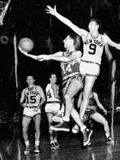
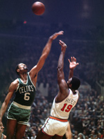
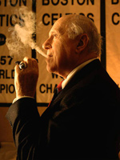
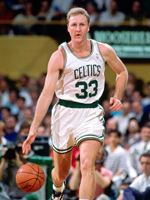

Celtics Legends

밥 쿠지(Bob Cousy)
1950~1963
1950~1963
"코트의 마술사" 라는 별명을 가진 포인트 가드이다. NBA 6번의 우승기록을 가지고 있으며 NBA 역사상 위대한 50인에 들었다. 포인트 가드의 패러다임을 다시 정의한 선수이다.
빌 러셀(Bill Russell)
1956~1969
1956~1969
보스턴 셀틱스의 전 선수로써 NBA 11번의 우승과 8번의 8연패라는 기록을 남긴 농구 역사상 가장 위대한 센터 중 한 명이다. NBA 역사상 위대한 선수 50인 뿐 아니라 미국 대통령 자유 훈장까지 받은 NBA 최고의 선수중 하나이다.
레드 아워백(Red Auerbach)
1951~1984
1951~1984
보스턴 셀틱스의 전 감독으로 16번 NBA championship의 우승을 이끌어 내었다.
래리 버드(Larry Bird)
1979~1992
1979~1992
보스턴 셀틱스의 전 선수로써 80년대 NBA 3번의 우승을 한 선수이다. NBA 역사상 가장 위대한 선수 50인에 선정되었다.
-
나머지 선수들
- Dave Cowens
- "Spider" Edwards
- John Havlicek
- Tom Heinsohn
- Dennis Johnson
- K.C. Jones
- Sam Jones
- Reggie Lewis
- Jim "Loscy" Loscutoff
- Don Nelson
- Cedric Maxwell
- Kevin McHale
- Robert Parish
- Frank Ramsey
- "Satch" Sanders
- Antoine Walker
- JoJo White
자세한 내용은 여기를 참조하세요.